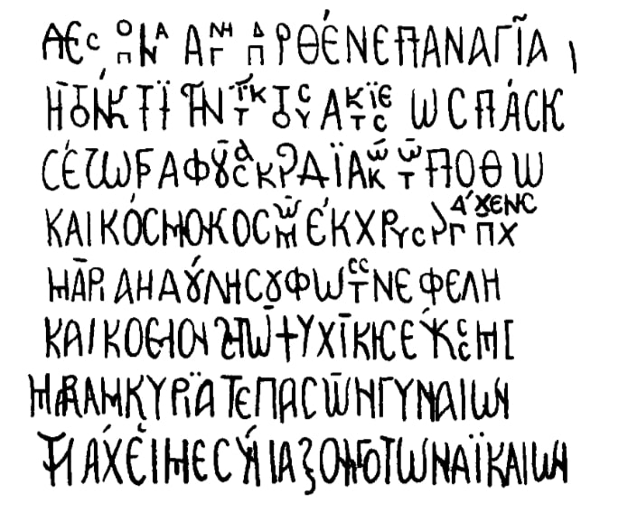

ნაკიფარის ხატი
შინაარსი / Summary
იამბიკო
ბიბლიოგრაფია Bibliography
კრიტიკული გამოცემა Interpretive Edition
Δέσποινα ἁγνή παρθένε παναγία
ἡ τὸν κτιστήν τίκτουσα κτίσεως πάσης
σὲ ζωγραφοῦσα καρδιακῷ τῷ πόθῳ
καὶ κόσμον κοσμῶ ἐκ χρυσαργ ύρου τέχνης
5Μαρία ἡ δούλη σου φωτὸς νεφέλη
καὶ κόσμον ζητῶ ψυχικῆς εὐκοσμί ας
Μαριάμ Κυρία τε πασῶν γυναίων
τῷ λάχει με σύνταξον τῷ τῶν δικαίων
დიპლომატიური გამოცემა Diplomatic Edition
ΔΕΣΠΟΙΝΑ ΑΓΝΗ ΠΑΡΘΕΝΕ ΠΑΝΑΓΙΑ
Η ΤΟΝ ΚΤΙΣΤΗΝ ΤΙΚΤΟΥΣΑ ΚΤΙΣΕΩΣ ΠΑΣΗΣ
ΣΕ ΖΩΓΡΑΦΟΥΣΑ ΚΑΡΔΙΑΚΩ ΤΩ ΠΟΘΩ
ΚΑΙ ΚΟΣΜΟΝ ΚΟΣΜΩ ΕΚ ΧΡΥΣΑΡΓ ΥΡΟΥ ΤΕΧΝΗΣ
5ΜΑΡΙΑ Η ΔΟΥΛΗ ΣΟΥ ΦΩΤΟΣ ΝΕΦΕΛΗ
ΚΑΙ ΚΟΣΜΟΝ ΖΗΤΩ ΨΥΧΙΚΗΣ ΕΥΚΟΣΜΙ ΑΣ
ΜΑΡΙΑΜ ΚΥΡΙΑ ΤΕ ΠΑΣΩΝ ΓΥΝΑΙΩΝ
ΤΩ ΛΑΧΕΙ ΜΕ ΣΥΝΤΑΞΟΝ ΤΩ ΤΩΝ ΔΙΚΑΙΩΝ

Icon from Nakipari
{'ka': 'უბიწო, დედოფალო, ქალწულო, ყოვლადწმინდა, მშობელო ყოვლისა ქმნილებისა შესაქმნელისა, შენ გხატავ გულითადი სურვილით და გამკობ ოქროვერცხლის ხელოვნებით (გაკეთებული) \n სამკაულით, მხევალი შენი, მარია, ნათლის ღრუბელო, ვეძიებ სულიერი კეთილბუნოვანების სამკაულს, მარიამ, უფალო ყოველთა დედათა, განმაწესე მე მართალთა ხვედრში.'}
{'default': 'ნაკიფარის წმ. გიორგის ეკლესიაში დაცული ყოფილა ღვთისმშობლის პატარ ხატი, ეს ნივთი 1931 წლის ექსპედიციის მერე არავის უნახავს (ის არ იყოს ადგილზე არც 1946 წელს, \n არც 1981 წელს). მასალა თინათინ ყაუხჩიშვილს მოტანილი აქვს ი. პომიალოვსკის კრებულის ( 44-45, ტაბ. №23) და ს. ყაუხჩიშვილის 1931 წლის სვანეთის ექსპედიციის დღიურის მიხედვით. პირი, ვინც შეთხზა იამბიკო და შეამკობინა ღვთისმშობლის ხატი, ქალია, მისი სახელი არ ჩანს (ხოლო თუ დავუშვებთ, რომ ის მარიამია, ვინაა არ არის ცნობილი). მ. ბროსე ხატს ათარიღებს 700 წლით (Mélanges asiatiques, II, 275).'}
<div type="edition" xml:lang="ka" ana="mtavruli" xml:space="preserve">
<ab>
<lb n="1"/><w lemma="ქრისტე"><expan><abbr>ქ</abbr><ex>რისტ</ex><abbr>ე</abbr></expan></w>
<w lemma="განსუენება"><expan><abbr>გა</abbr><ex>ნ</ex><abbr>ო</abbr><ex>ჳ</ex><abbr>ს</abbr><ex>უ</ex><abbr>ენე</abbr></expan></w>
<w lemma="სულ">სოჳ<lb n="2" break="no"/>ლსა</w>
<name nymRef="ვაჩა">ვაჩაჲს<lb n="3" break="no"/>ასა</name>
<name nymRef="გურა"><expan><abbr>გო</abbr><ex>ჳ</ex><abbr>რაჲ<lb n="4" break="no"/>სასა</abbr></expan></name>
<name nymRef="მირა"><expan><abbr>მ</abbr><ex>ი</ex><abbr>რა</abbr><ex>ჲ</ex><abbr>ს</abbr><ex>ა</ex><abbr>ს</abbr><ex>ა</ex></expan></name>
</ab>
</div>